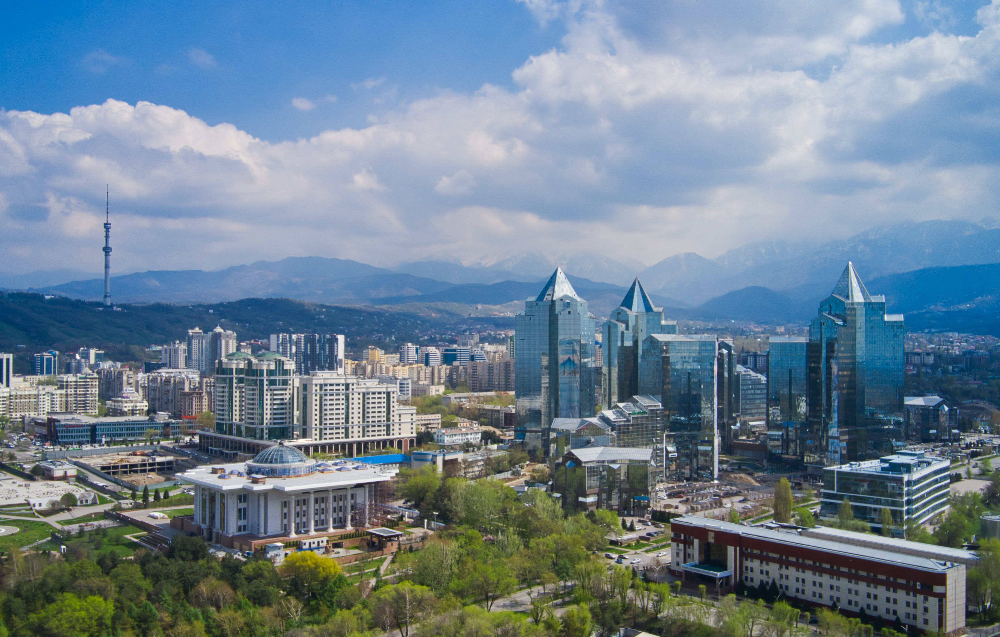
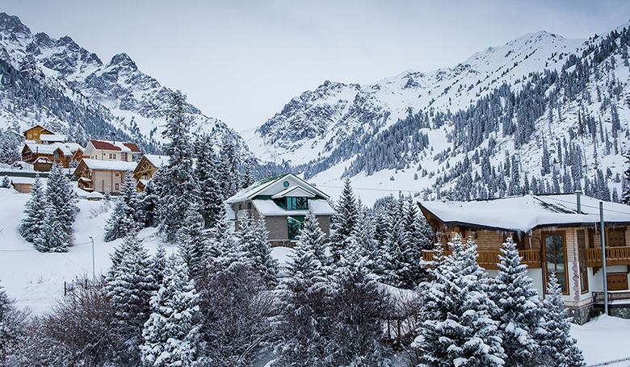
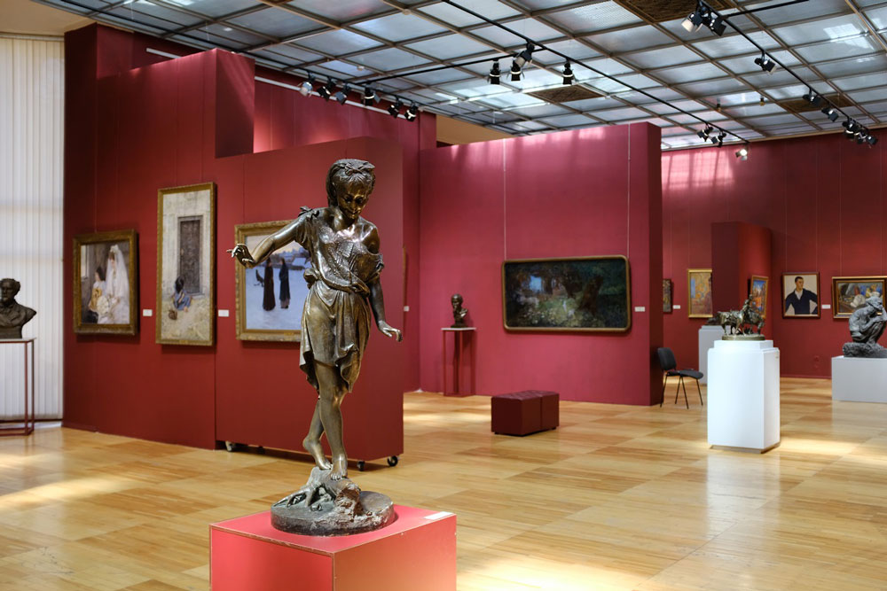

Almaty is the is the largest city in Kazakhstan, with a population of about 2 million.It was the capital of Kazakhstan from 1929 to 1936 as an autonomous republic within the Russian Soviet Federative Socialist Republic as part of the Soviet Union, then from 1936 to 1991 as a union republic and finally from 1991 as an independent state to 1997 when the government relocated the capital to Astana. Almaty is still the major commercial and cultural centre of Kazakhstan, as well as its most populous and most cosmopolitan city. The city is located in the mountainous area of southern Kazakhstan near the border with Kyrgyzstan in the foothills of the Trans-Ili Alatau at an elevation of 700–900 m, where the Large and Small Almatinka rivers run into the plain. The city, just like Nur-Sultan and Shymkent, doesn't belong to any region and is officially a "city of state importance".
Almaty means city of apple trees', and, because of its relatively mild climate, it has a wide range of apple trees. The Almaty area is said to be the genetic home for many varieties of apples and the area is often visited by researchers and scientists from around the world, in order to learn more about the complex systems of genetics, and also to discover the true beginnings of the domestic apple. A good traditional story links the taking of the apple from the tree in the old testament to Almaty. The Turkic name for apple is Alma and Ata meaning forefather, which could lay it open to be possibly the origin of the Apple (The garden of Eden).

Almaty has a humid continental climate with hot summers and cold winters. It is characterized by the influence of mountain–valley circulation. This is especially evident in the northern part of the city, located directly in the transition zone of the mountain slopes to the plains. Annual average air temperature is equal to 10 °C (50 °F), the coldest month is January, −4.7 °C (24 °F) (on average), the warmest month (July) 23.8 °C (75 °F) (on average). In average years frost starts on about 14 October and ends on about 18 April, with sustained extreme cold from about 19 December to about 23 February, a period of about 67 days. Weather with temperature above 30 °C (86 °F) is average for about 36 days a year. In the center of Almaty, like any large city, there is a "heat island" – the average daily temperature contrast between the northern and southern suburbs of the city is 3.8% in the coldest days and 2.2% in the hottest five days. Therefore, frost in the city center starts about 7 days later and finishes 3 days earlier than in the northern suburbs. Annual precipitation is about 650 to 700 mm (25.6 to 27.6 in). April and May are the wettest months, during which about a third of the city's annual precipitation is received.
Almaty is largely considered to be the heart and soul of Kazakhstan's classical and popular cultures. The Almaty Region and the city itself have a distinct vibe and pace compared to other regions and cities in Kazakhstan. Almaty is the historical and contemporary capital of intellectualism in Kazakhstan as a result of Almaty's location along the Ancient Silk Road. The Abai Kazakh State Opera and Ballet Theatre has anchored the city's theater scene since 1934 and was founded around a community of local performance artists. The Kasteyev State Museum of Arts.was founded in 1935, is the largest museum in Kazakhstan, and has the largest collection of artworks by Kazakh classic and contemporary artists.
If you follow this page, you can find must places to visit.